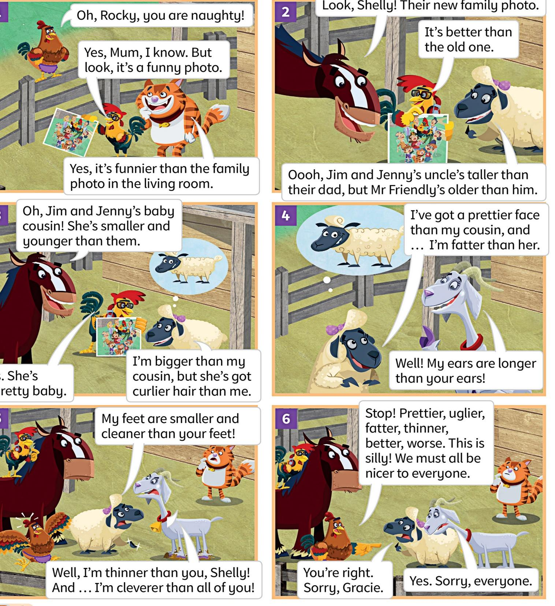
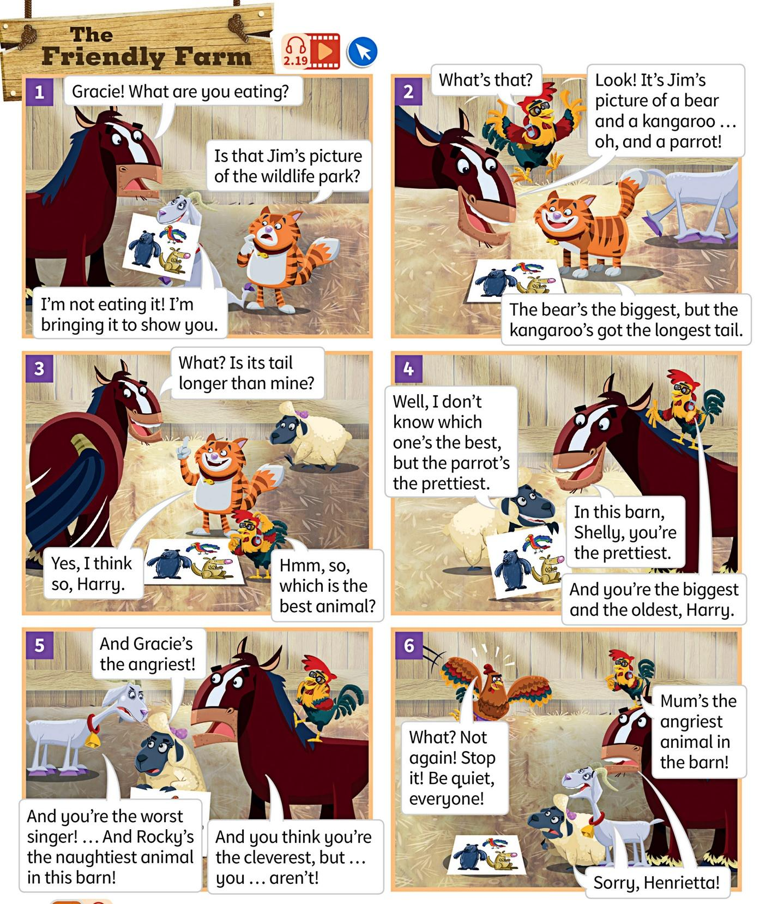

1. How to compare · 变化规则
一般加 -er / -est：small → smaller → smallest
以 e 结尾加 -r / -st：late → later → latest
辅音 + y：y 变 i：happy → happier → happiest
重读闭音节双写尾字母：big → bigger → biggest
较长的词用 more / most：difficult → more difficult → most difficult
不规则：good → better → best；bad → worse → worst；far → farther → farthest
- 比较级常与 than 连用：She is taller than me.（她比我高。）
- 最高级前通常用 the，并说明范围：He is the tallest in his class.（他是班里最高的。）
- farther/farthest 多指距离；further/furthest 也可表示“进一步的、额外的”。older/oldest 可指年龄或新旧；elder/eldest 常用于家庭成员之间的长幼关系。Latest 是“最新的”，last 是“最后的”。
2. Adjective word bank · 形容词表
| 中文 | 原级 | 比较级 | 最高级 |
|---|---|---|---|
| 大 / 小 | big / small | bigger / smaller | biggest / smallest |
| 高 / 矮 | tall / short | taller / shorter | tallest / shortest |
| 长 / 快 / 慢 | long / fast / slow | longer / faster / slower | longest / fastest / slowest |
| 老 / 年轻 / 新 | old / young / new | older / younger / newer | oldest / youngest / newest |
| 热 / 冷 / 温暖 / 凉爽 | hot / cold / warm / cool | hotter / colder / warmer / cooler | hottest / coldest / warmest / coolest |
| 好 / 坏 | good / bad | better / worse | best / worst |
| 开心 / 伤心 | happy / sad | happier / sadder | happiest / saddest |
| 容易 / 难 | easy / difficult | easier / more difficult | easiest / most difficult |
| 漂亮 / 美丽 / 丑 | pretty / beautiful / ugly | prettier / more beautiful / uglier | prettiest / most beautiful / ugliest |
| 干净 / 脏 | clean / dirty | cleaner / dirtier | cleanest / dirtiest |
| 富 / 贫穷 | rich / poor | richer / poorer | richest / poorest |
| 强壮 / 虚弱 / 聪明 | strong / weak / smart | stronger / weaker / smarter | strongest / weakest / smartest |
| 友好 / 有趣 | friendly / funny | friendlier / funnier | friendliest / funniest |
| 忙 / 懒 | busy / lazy | busier / lazier | busiest / laziest |
| 饿 / 渴 | hungry / thirsty | hungrier / thirstier | hungriest / thirstiest |
| 重 / 轻 / 便宜 | heavy / light / cheap | heavier / lighter / cheaper | heaviest / lightest / cheapest |
| 贵 / 近 / 远 | expensive / near / far | more expensive / nearer / farther | most expensive / nearest / farthest |
| 早 / 晚 / 吵闹 | early / late / noisy | earlier / later / noisier | earliest / latest / noisiest |
| 安静 / 大声 | quiet / loud | quieter / louder | quietest / loudest |
| 软 / 硬 / 重要 | soft / hard / important | softer / harder / more important | softest / hardest / most important |
Story 1 · A Family Photo · 全家福
点击原图可放大阅读；点击下方每格台词，或按 Enter / 空格，显示中文翻译。

Panel 1 · 第 1 格
Panel 2 · 第 2 格
Panel 3 · 第 3 格
Panel 4 · 第 4 格
Panel 5 · 第 5 格
Panel 6 · 第 6 格
Story 2 · The Friendly Farm · 友善农场
点击原图可放大阅读；点击下方每格台词，或按 Enter / 空格，显示中文翻译。

Panel 1 · 第 1 格
Panel 2 · 第 2 格
Panel 3 · 第 3 格
Panel 4 · 第 4 格
Panel 5 · 第 5 格
Panel 6 · 第 6 格
Farm story language · 故事词汇与句型
family photo 全家福 · cousin 堂/表兄弟姐妹 · curly hair 卷发 · wildlife park 野生动物园 · bear 熊 · kangaroo 袋鼠 · parrot 鹦鹉 · tail 尾巴 · barn 谷仓 · singer 歌手
| 中文 | 原级 | 比较级 | 最高级 |
|---|---|---|---|
| 卷曲的 | curly | curlier | curliest |
| 胖的 | fat | fatter | fattest |
| 瘦的 | thin | thinner | thinnest |
| 聪明的 | clever | cleverer | cleverest |
| 友善的 | nice | nicer | nicest |
| 生气的 | angry | angrier | angriest |
| 淘气的 | naughty | naughtier | naughtiest |
Compare two · 比较两者
形容词比较级 + than：It’s better than the old one.（它比旧的那张更好。）
Is its tail longer than mine? 中的 mine = my tail（我的尾巴）。
Compare a group · 在一个范围内找“最……”
the + 最高级：The bear’s the biggest.（画里的熊最大。）The kangaroo’s got the longest tail.（袋鼠的尾巴最长。）
in this barn 表示范围：在这个谷仓里。
Read the contractions · 读懂缩写
The bear’s = The bear is；the kangaroo’s got = the kangaroo has got。Jim’s picture 中的 ’s 表示“Jim 的”。
Be nice to everyone · 友善待人
We must all be nicer to everyone.（我们都必须对每个人更友善。）be nice to + 人 表示“对某人友善”。
Farm story practice · 故事理解与最高级练习
读完两个故事，选择答案并查看反馈。
1. How is the baby cousin compared with Jim and Jenny?
小表妹与 Jim 和 Jenny 相比怎么样？
2. What must the animals do at the end of the first story?
第一个故事的最后，大家必须怎么做？
3. Which animal in Jim’s picture has got the longest tail?
Jim 的画里，哪只动物的尾巴最长？
4. Rocky is the ___ animal in this barn.
在这个谷仓里，Rocky 是最淘气的动物。
3. Try it · 选出比较级
1. My pencil is ___ than yours.（我的铅笔比你的长。）
2. Today is ___ than yesterday.（今天比昨天热。）
3. Science is ___ than art.（科学比美术难。）
4. This cake is ___ than that one.（这个蛋糕比那个好。）
5. Health is ___ than money.（健康比金钱重要。）
做题口诀：看到 than，选比较；一般加 er，多音节加 more；y 变 i 再加 er；重读闭音节双写尾字母；good 变 better，bad 变 worse。
Homework · 作业
完成形容词比较级默写卷：看中文和原级，写出正确的比较级（共 50 题）。再用比较级造句，记得用 than。
50 comparison examples · 比较级造句
- My bag is bigger than yours.我的书包比你的大。
- This box is smaller than that one.这个盒子比那个小。
- Tom is taller than Mike.汤姆比迈克高。
- Amy is shorter than her sister.艾米比她姐姐矮。
- This ruler is longer than that pen.这把尺子比那支笔长。
- A plane is faster than a train.飞机比火车快。
- A turtle is slower than a rabbit.乌龟比兔子慢。
- My grandpa is older than my dad.我爷爷比我爸爸老。
- I am younger than my cousin.我比我表哥小。
- This book is newer than that one.这本书比那本新。
- Today is hotter than yesterday.今天比昨天热。
- Winter is colder than autumn.冬天比秋天冷。
- This coat is warmer than that jacket.这件外套比那件夹克暖和。
- The morning is cooler than the afternoon.早上比下午凉爽。
- This cake is better than that one.这个蛋糕比那个好。
- This movie is worse than that one.这部电影比那部差。
- Lily is happier than before.莉莉比以前更开心。
- He looks sadder than yesterday.他看起来比昨天更伤心。
- Math is easier than English for me.对我来说数学比英语容易。
- Science is more difficult than art.科学比美术难。
- This dress is prettier than that skirt.这条裙子比那条短裙漂亮。
- The park is more beautiful than the street.公园比街道美丽。
- This picture is uglier than that one.这幅画比那幅丑。
- My room is cleaner than my brother's.我的房间比我弟弟的干净。
- Your shoes are dirtier than mine.你的鞋比我的脏。
- He is richer than his friend.他比他朋友富有。
- Their family is poorer than ours.他们家比我们家贫穷。
- Tom is stronger than Jack.汤姆比杰克强壮。
- She is weaker than her brother.她比她哥哥虚弱。
- Lucy is smarter than me in math.露西数学比我聪明。
- My dog is friendlier than yours.我的狗比你的友好。
- This story is funnier than that one.这个故事比那个有趣。
- My mom is busier than my dad.我妈妈比我爸爸忙。
- I am lazier on Sunday than on Monday.我周日比周一懒。
- I am hungrier now than in the morning.我现在比早上饿。
- He is thirstier than me after running.跑步后他比我渴。
- This box is heavier than that bag.这个箱子比那个包重。
- A feather is lighter than a stone.羽毛比石头轻。
- This pen is cheaper than that one.这支笔比那支便宜。
- That watch is more expensive than this one.那块表比这块贵。
- My home is nearer to school than yours.我家比你家离学校近。
- The sun is farther from Earth than the moon.太阳比月亮离地球更远。
- I get up earlier than my sister.我比我妹妹起得早。
- He goes to bed later than me.他比我睡得晚。
- This street is noisier than that one.这条街比那条吵。
- The library is quieter than the classroom.图书馆比教室安静。
- His voice is louder than mine.他的声音比我大。
- This pillow is softer than that one.这个枕头比那个软。
- This chair is harder than that sofa.这把椅子比那个沙发硬。
- Health is more important than money.健康比金钱重要。
It is true that my cat is smaller than yours.（确实，我的猫比你的猫小。）
It is true that my desk is higher than yours.（确实，我的书桌比你的高。）
15-question cloze · 比较级完形填空
1. My pencil is ___ than yours.
2. Tom is ___ than Mike.
3. Today is ___ than yesterday.
4. This cake is ___ than that one.
5. Amy is ___ than her sister.
6. Math is ___ than English for me.
7. This box is ___ than that bag.
8. My room is ___ than my brother's.
9. Science is ___ than art.
10. This dress is ___ than that skirt.
11. He is ___ than his friend.
12. My mom is ___ than my dad.
13. I am ___ now than in the morning.
14. That watch is ___ than this one.
15. Health is ___ than money.
50-question worksheet · 比较级默写卷
看中文和原级，写出比较级。每题 2 分。
- 1. 重的 · heavy →
- 2. 好的 · good →
- 3. 高的 · tall →
- 4. 忙碌的 · busy →
- 5. 热的 · hot →
- 6. 难的 · difficult →
- 7. 开心的 · happy →
- 8. 便宜的 · cheap →
- 9. 远的 · far →
- 10. 干净的 · clean →
- 11. 美丽的 · beautiful →
- 12. 小的 · small →
- 13. 口渴的 · thirsty →
- 14. 晚的 · late →
- 15. 强壮的 · strong →
- 16. 容易的 · easy →
- 17. 吵闹的 · noisy →
- 18. 坏的 · bad →
- 19. 长的 · long →
- 20. 昂贵的 · expensive →
- 21. 懒惰的 · lazy →
- 22. 冷的 · cold →
- 23. 友好的 · friendly →
- 24. 早的 · early →
- 25. 重要的 · important →
- 26. 矮的 · short →
- 27. 饥饿的 · hungry →
- 28. 新的 · new →
- 29. 丑的 · ugly →
- 30. 安静的 · quiet →
- 31. 快的 · fast →
- 32. 伤心的 · sad →
- 33. 富有的 · rich →
- 34. 温暖的 · warm →
- 35. 聪明的 · smart →
- 36. 轻的 · light →
- 37. 慢的 · slow →
- 38. 有趣的 · funny →
- 39. 近的 · near →
- 40. 大的 · big →
- 41. 老的 · old →
- 42. 漂亮的 · pretty →
- 43. 虚弱的 · weak →
- 44. 凉爽的 · cool →
- 45. 脏的 · dirty →
- 46. 大声的 · loud →
- 47. 贫穷的 · poor →
- 48. 柔软的 · soft →
- 49. 年轻的 · young →
- 50. 硬的 · hard →